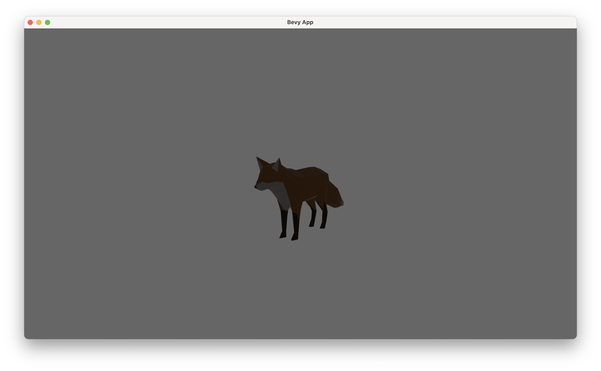
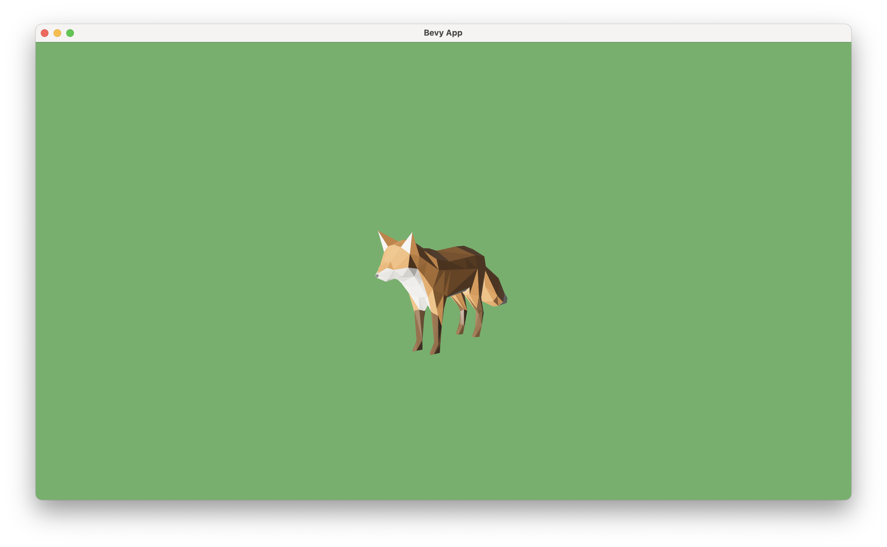

See through a camera ch01/step-3
-
We are now already seeing the 3D game world in the window, through a camera.
-
The mechanism of a camera:
- Without a camera, the game world is just a bunch of data describing what everything is and where they are.
- A camera uses such information to compute what we should see from a certain point of view, as if we put a real camera in there.
- Specifically, given all the information of object shapes, positions, environment lightings, etc., the camera will compute colors of each pixels on the screen, as if we were seeing things directly from there.
- This process is called rendering, which is one of the most important concept of game engine.
-
The default position of the camera is now pointing at the legs of the fox. Let's first move our camera to a more comfortable position.
- In game engines, we often use the term transform to represent the position, rotation (or orientation), and scale (or size) of an object.
- If we want to move our camera to a different position and orientation, we need to define the
Transformcomponent on creating theCamera3DBundle:commands.spawn(Camera3dBundle { transform: Transform::from_xyz(20.0, 10.0, 30.0) .looking_at(Vec3::new(0.0, 5.0, 0.0), Vec3::Y), ..default() }); - Notice how we use
from_xyzto construct aTransformfrom that position, and then calllooking_aton it to define rotation. Also, this fox is too big, so we scale it down a little bit, also withTransform.
-
To understand what these numbers represent, we need to understand the coordinate system of the Bevy game world.
- This diagram from the Unofficial Bevy Cheat Book says everything about position. We use
from_xyzto define the position of an object (or a camera) in a right-handed Y-up coordinate system.
- The method
looking_atis a convenient way of defining a camera rotation. It takes two arguments:- The first argument
target, is the 3D coordinates of the position that you want your camera to point at. - The second argument
up, is used to define the up direction of the camera. Most of the time we want a horizontal view of the world, so we set the up direction toVec3::Y, i.e. the default up direction of the coordinate system. - You may notice that the
updirection isn't perfectly orthogonal with the target direction. This is allowed, as Bevy will calculate the internal representation of the rotation (a quaternion orQuatrepresenting an orientation) based on the plane formed by the two vectors.
- The first argument
- As a practice, let's describe this scene in terms of coordinates:
- The fox is placed at the original, standing on the X-Z plane, facing +Z direction.
- The camera is placed at the front-left of the fox, slightly higher, watching the fox (the eyesight drops on the body of the fox, a little higher than the origin), keeping a horizontal view by using +Y as up direction.
- The scene looks like this: 
- This diagram from the Unofficial Bevy Cheat Book says everything about position. We use
-
The fox still looks very dark. This is because there is no light in this scene. To make this scene look more natural and vivid, we add a directional light to it.
- Think of directional light as sunlight. It all comes from a single direction.
- Here in
setup, we add a default directional light (still throughcommands.spawn). The default light points at -Z direction, lightening the front side of the fox.
-
We can also apply some global settings to give this scene a more lively feel:
- Global settings are often defined as resources, as only one instance of a resource is allowed in the game world.
- We first set background color to green, to give us a feeling of grass. This is done by inserting
ClearColorresource. - We also set up an ambient light to soften the picture, by inserting the
AmbientLightresource.
#![allow(unused)] fn main() { App::new() .insert_resource(ClearColor(Color::rgb(0.4, 0.7, 0.4))) .insert_resource(AmbientLight { color: Color::WHITE, brightness: 0.2, }) // ... } -
The final scene looks like this: 